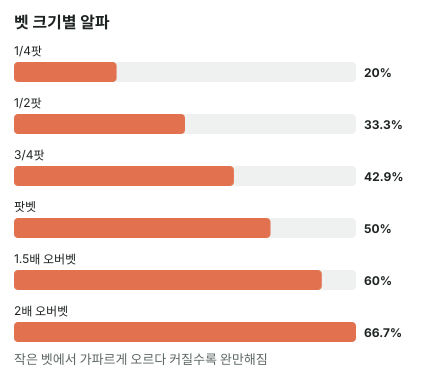
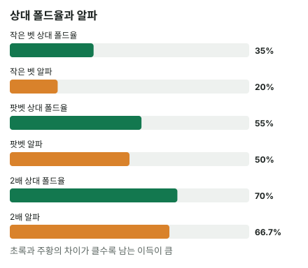

안녕하세요. A01에서 알파(블러프가 본전이 되려면 상대가 접어야 하는 비율)를 배웠고, A08에서 c-bet 크기마다 알파가 다르다는 것도 봤죠.
그런데 실전에서는 한 가지가 더 움직여요. 벳을 키우면 상대가 접는 비율도 같이 바뀔 수 있다는 거예요. 그러면 "많이 접게 만드는 큰 벳"이 늘 좋은 걸까요? 오늘은 필요한 폴드율과 실제 폴드율을 같이 움직여 보면서 답을 찾아볼게요.
이 글에서 배울 것
- 벳을 키울수록 알파가 오르긴 하지만 점점 천천히 오르는 이유(분모에도 벳이 들어 있어서)
- 블러프 EV를 (폴드율 − 알파) × (팟 + 벳) 한 줄로 바꿔 읽는 법
- 큰 벳이 이득인지는 벳 크기만으로 정해지지 않고, 크기마다 "차이 × 걸린 돈"을 비교해야 정해진다는 것
1단계. 알파는 오르는데, 점점 천천히 올라요
알파 다시 한 줄
알파 = 벳 ÷ (팟 + 벳). 순수 블러프(콜 받으면 지는 핸드)로 벳했을 때, 상대가 이 비율보다 많이 접어야 블러프가 남아요.
팟 10BB에서 크기별로
| 벳 | 팟 대비 | 알파 |
|---|---|---|
| 2.5BB | 1/4 | 20% |
| 5BB | 1/2 | 약 33.33% |
| 7.5BB | 3/4 | 약 42.86% |
| 10BB | 팟벳 | 50% |
| 15BB | 1.5배 | 60% |
| 20BB | 2배 | 약 66.67% |
같은 만큼 늘려도 오르는 폭이 줄어요
표 위쪽 네 줄은 벳을 팟의 1/4씩(2.5BB씩) 늘린 거예요. 알파는 20% → 33.33% → 42.86% → 50%로 오르는데, 한 칸 오를 때마다 폭이 작아져요.
팟의 절반씩(5BB씩) 늘려 봐도 같아요. 하프팟 33.33% → 팟벳 50% → 1.5배 60% → 2배 66.67%. 벳을 하프팟의 네 배로 키웠는데 알파는 두 배에 그쳐요.
왜 그럴까: 분모에도 벳이 있어서
알파 = 벳 ÷ (팟 + 벳)에서 벳은 분자에도, 분모에도 들어 있어요. 벳을 키우면 위가 커지지만 아래도 같이 커져서, 비율은 생각만큼 안 올라가요.
소금물 농도를 떠올리면 쉬워요. 물(팟) 10컵에 소금(벳)을 넣을수록 짜지긴 하지만, 소금이 늘수록 소금물 전체도 늘어나서 한 숟갈이 올리는 농도는 점점 줄어요. 아무리 넣어도 소금 100%짜리 소금물은 안 되죠. 알파도 아무리 벳을 키워도 "상대가 전부 접어야 본전"까지는 가지 않아요.

2단계. 같은 상대에게 세 가지 크기 (가정)
오늘의 가정
장면을 단순하게 정할게요.
- 리버, 팟 10BB. 우리는 맞은 게 없는 핸드라 콜을 받으면 져요(순수 블러프)
- 상대는 콜 아니면 폴드만 해요(레이즈 없음)
- 이 상대가 크기에 따라 이만큼 접는다고 가정해요(연습용 숫자, 실제 빈도 아님)
| 벳 | 알파 | 상대 폴드율(가정) | EV |
|---|---|---|---|
| 2.5BB | 20% | 35% | 약 1.88BB |
| 10BB | 50% | 55% | 1BB |
| 20BB | 약 66.67% | 70% | 1BB |
EV를 풀어 보면
작은 벳 EV = 0.35(폴드율) × 10(가져오는 팟) − 0.65(콜 받는 비율) × 2.5(잃는 벳) = 3.5 − 1.625 = 약 1.88BB
팟벳 EV = 0.55(폴드율) × 10(팟) − 0.45(콜 받는 비율) × 10(벳) = 5.5 − 4.5 = 1BB
2배 EV = 0.7(폴드율) × 10(팟) − 0.3(콜 받는 비율) × 20(벳) = 7 − 6 = 1BB
읽는 법
상대는 큰 벳에 더 많이 접었어요(35% → 55% → 70%). 그런데 남는 몫은 작은 벳에서 팟벳으로 가면서 줄었고, 팟벳과 2배는 같았어요. 이 상대에게는 작은 벳이 가장 이득이에요.
"더 많이 접게 했는데 왜 덜 벌어요?"의 답은 다음 단계 한 줄에 있어요.
3단계. EV를 "차이 × 걸린 돈"으로 바꾸기
한 줄로 정리되는 식
블러프 EV = 폴드율 × 팟 − (1 − 폴드율) × 벳이죠. 이걸 두 줄로 정리해 볼게요.
- 괄호를 풀면: 폴드율 × 팟 − 벳 + 폴드율 × 벳 = 폴드율 × (팟 + 벳) − 벳
- (팟 + 벳)으로 묶으면: (폴드율 − 벳 ÷ (팟 + 벳)) × (팟 + 벳)
괄호 안의 벳 ÷ (팟 + 벳)이 바로 알파예요. 그래서 이렇게 돼요.
블러프 EV = (폴드율 − 알파) × (팟 + 벳)
이게 무슨 뜻이냐면, 블러프의 손익은 두 개를 곱한 것이라는 거예요.
- 차이: 상대가 알파보다 얼마나 더 접나(폴드율 − 알파)
- 걸린 돈: 팟 + 벳. 폴드율이 알파보다 조금 높으면, 그 차이만큼의 비율로 이 돈을 번다는 뜻이에요
오늘 표에 대 보면
작은 벳 (0.35 − 0.2) × 12.5 = 1.875
팟벳 (0.55 − 0.5) × 20 = 1
2배 (0.7 − (2/3)) × 30 = 1
작은 벳은 걸린 돈이 12.5BB로 작지만 차이가 크고, 팟벳·2배는 걸린 돈이 크지만 차이가 아주 얇아요. 작은 벳에서 팟벳으로 가면서 상대 폴드율은 35%에서 55%로 올랐지만, 알파는 20%에서 50%로 더 많이 올라서 차이가 줄어든 거예요.

왜 그럴까: 큰 벳은 "차이"를 깎고 "판돈"을 키워요
두 손잡이가 반대로 움직여요
벳을 키우면 손잡이 두 개가 같이 돌아가요.
- 걸린 돈(팟 + 벳)은 무조건 커져요. EV를 키우는 쪽이에요
- 알파도 무조건 올라요. 상대 폴드율이 그만큼 안 따라오면 차이가 줄어서 EV를 깎는 쪽이에요
그래서 큰 벳이 이득인지는 두 손잡이 중 어느 쪽이 더 크게 돌아가느냐로 정해져요. 크기를 키울 때 상대 폴드율이 알파보다 빨리 오르면 차이도 커지고 걸린 돈도 커지니 확실히 큰 벳이 나아요. 하지만 그게 꼭 필요한 건 아니에요.
폴드율이 알파보다 느리게 올라도 따라잡을 수 있어요
오늘 팟벳이 작은 벳(약 1.875BB)을 따라잡으려면 상대가 팟벳에 약 59.4% 접으면 돼요.
(0.59375 − 0.5) × 20 = 1.875
이때 폴드율은 35%에서 59.4%로 올랐고, 알파는 20%에서 50%로 그보다 더 많이 올랐어요. 차이는 0.15에서 0.09375로 줄었는데도 걸린 돈이 12.5BB에서 20BB로 커져서 EV가 같아진 거예요.
이게 무슨 뜻이냐면, 큰 벳은 차이가 조금 얇아지는 걸 판돈으로 메울 수 있다는 거예요. 그래서 "알파보다 빨리 오르나"만 보면 큰 벳을 너무 쉽게 버리게 돼요. 결국 기준은 하나, 크기마다 차이 × 걸린 돈을 계산해 큰 쪽이에요.
1단계 곡선과 이어지는 이유
1단계에서 알파가 위로 갈수록 천천히 오른다고 했죠. 이건 큰 벳에 유리한 성질이에요. 큰 쪽으로 갈수록 알파가 덜 오르니, 상대 폴드율이 조금만 더 올라 줘도 차이가 살아나요.
그러니까 "큰 벳은 늘 나쁘다"도, "큰 벳은 많이 접게 하니 늘 좋다"도 틀려요. 제목의 질문에 대한 답은 이 상대가 크기에 얼마나 민감하게 반응하느냐에 따라 그때그때 최선의 크기가 달라진다는 거예요.
자주 하는 실수
실수 1. "많이 접게 만들면 무조건 이득" 폴드율만 보고 크기를 고르는 경우예요. 오늘 2배 벳은 상대를 70%나 접게 했지만, 알파가 약 66.67%라 차이가 아주 얇아 EV는 1BB였어요. 35%만 접게 한 작은 벳(약 1.88BB)보다 적었죠. 대신 폴드율 옆에 늘 알파를 같이 적고 둘의 차이를 봐요.
실수 2. "벳을 두 배로 키우면 필요한 폴드도 두 배" 알파를 벳 크기에 비례한다고 착각하는 경우예요. 하프팟 33.33%에서 2배 66.67%로, 벳은 네 배가 됐는데 알파는 두 배에 그쳤어요. 이걸 모르면 큰 벳을 지나치게 겁내게 돼요. 대신 알파는 분모에도 벳이 있다는 걸 떠올리고 표로 확인해요.
실수 3. 걸린 돈을 빼고 차이만 봄 "폴드율 − 알파"가 큰 쪽만 고르는 경우예요. 차이가 같아도 걸린 돈이 크면 더 많이 벌어요. 오늘 팟벳과 2배는 차이가 다르지만(0.05와 약 0.033) 걸린 돈이 20BB와 30BB라 EV가 똑같이 1BB가 됐죠. 대신 차이 × (팟 + 벳)까지 곱해서 비교해요.
"상대 폴드율은 어디서 알아요?"
좋은 질문이에요. 정확한 숫자는 알 수 없어요. 그래서 이 블로그는 상대 폴드율을 "가정"이라고 밝히고 계산해요.
실전에서는 이 상대가 크기마다 어떻게 반응했는지를 쇼다운으로 확인하고 쌓아 두는 게 출발점이에요. 큰 벳에 유난히 잘 접는 사람인지, 크기와 상관없이 비슷하게 콜하는 사람인지가 오늘 계산의 입력값이 돼요. 상대 레인지를 가정해 폴드율을 콤보로 세는 법은 A09에서 다뤄요.
오늘은 순수 블러프로 단순화했어요. 콜을 받아도 이길 수 있는 드로우로 벳하면 계산이 달라지는데, 다음 글 A21에서 턴 드로우로 먼저 해 보고 세미블러프 EV는 A22에서 배워요.
숫자가 뒤집히는 지점
기준은 크기마다 (폴드율 − 알파) × (팟 + 벳)이 가장 큰 쪽이에요.
예를 들어 오늘 팟벳이 작은 벳(약 1.88BB)을 따라잡으려면, 상대가 팟벳에 약 59.4% 접어야 해요. 그보다 더 접는 상대라면 팟벳이 앞서요.
선생님의 한마디
블러프 크기를 고를 때 우리는 이 순서로 해요.
- 후보 크기 두세 개를 정하고 알파를 옆에 적어요(하프팟 약 33.33%, 팟벳 50%처럼 외워 두면 빨라요)
- 이 상대가 크기마다 몇 % 접을지 어림해요. 근거(쇼다운, 성향)를 같이 떠올려요
- 차이 × (팟 + 벳)이 큰 쪽을 골라요. 어림이 불확실하면 차이가 넉넉한 쪽이 안전해요
연습 문제
학습툴에는 알파를 직접 넣는 칸이 없어요. 홀덤학습 팟 오즈 퀴즈 Lv.5(블러프 본전)로 같은 계산을 연습해 보세요.
문제 1. 팟 8BB. 이 상대는 어떤 크기에도 40% 접는다고 봐요. 블러프가 딱 본전이 되는 벳 크기는? 그보다 크게 걸면 어떻게 될까요?
정답 보기
알파가 40%가 되는 벳을 찾으면 돼요. 알파 = 벳 ÷ (8 + 벳)이니, 벳은 약 5.33BB(팟의 3분의 2)예요. 확인: 5.33 ÷ (8 + 5.33) = 40%. 폴드율이 크기와 상관없이 그대로인 상대라면, 이보다 크게 걸수록 알파만 올라가서 차이가 음수가 돼요. 이런 상대에게는 크기를 키울 이유가 없어요.
문제 2. 팟 12BB. 이 상대는 4BB 벳에 30%, 9BB 벳에 50% 접는다고 가정해요. 어느 쪽이 이득일까요?
정답 보기
- 4BB: 알파 25%, EV = 0.3 × 12 − 0.7 × 4 = 3.6 − 2.8 = +0.8BB
- 9BB: 알파 약 42.86%, EV = 0.5 × 12 − 0.5 × 9 = 6 − 4.5 = +1.5BB
이번 상대는 크기를 키울 때 폴드율이 알파보다 빨리 늘어서(30% → 50%, 알파는 25% → 약 42.86%) 차이도 커지고 걸린 돈도 커졌어요. 그래서 큰 벳이 확실히 나아요. 오늘 2단계와 반대 결론이죠. 답은 벳 크기가 아니라 상대 폴드율이 크기에 따라 얼마나 변하나에 달려 있어요.
핵심 정리
- 알파 = 벳 ÷ (팟 + 벳). 벳이 분모에도 있어서, 벳을 키울수록 알파는 오르지만 점점 천천히 올라요
- 블러프 EV = (폴드율 − 알파) × (팟 + 벳): 상대가 알파보다 얼마나 더 접나 × 걸린 돈
- 큰 벳은 걸린 돈을 키우지만 알파도 올려 차이를 깎아요. 폴드율이 알파보다 빨리 오르면 확실히 이득이고, 느리게 올라도 판돈으로 메울 수 있어요
- 그래서 "늘 더 좋은 크기"는 없고, 크기마다 차이 × 걸린 돈을 계산해 큰 쪽을 골라요
정리하며
오늘은 팟 10BB에서 벳 크기마다 알파를 구해, 알파가 오르긴 해도 점점 천천히 오른다는 걸 봤어요. 그리고 상대가 큰 벳에 더 많이 접는다고 가정했는데도, 작은 벳이 약 1.88BB로 팟벳·2배(1BB)보다 많이 남았죠.
큰 벳은 판돈을 키우는 대신 차이를 얇게 만들었고, 오늘 상대에게는 그 얇아진 차이를 판돈이 다 메우지 못했어요. 블러프 크기를 고를 땐 "얼마나 접게 하나"보다 "알파보다 얼마나 더 접게 하나"를 떠올리세요.
다음 글 A21에서는 오늘처럼 맞은 게 없는 블러프가 아니라, 턴에 6♥5♥ 드로우를 들고 한 번 더 벳할지 정해요. 콜을 받아도 리버에 맞을 길이 남아 있을 때 계산이 어떻게 달라지는지가 다른 점이에요.
AI 작성 · 숫자는 계산 검증 · 상대 폴드율은 연습용 가정(실제 빈도 아님) · 리버 순수 블러프로 단순화, 상대는 콜 또는 폴드만 · 리버 마지막 결정이라 EV가 최종 결과